Train your own ChatGPT
microGPT was the toy. This is the real version, on the real GPUs, with your name on it.
You spent Lab 02 hand-tracing a 1-layer transformer — microGPT, with a 27-token alphabet (a–z + BOS) and 4,192 parameters you could read out loud. (The hand-traced math inside the lab used a 4-token toy version of microGPT, but the real model on the page has 27.) The model you'll train in Lab 03 is the same architecture — just with depth 20 instead of 1, vocabulary 32,768 instead of 27, and a real-text training corpus. Karpathy's nanochat demonstrates that the gap from "toy I understand" to "chatbot that answers questions" is purely scaling. The objective today is to feel that scaling end-to-end.
In October 2025, Andrej Karpathy released nanochat — a 2,000-line repository that takes you from raw text to a deployed chat model in one shell script (runs/speedrun.sh) for roughly $100 of compute on 8×H100 GPUs. The four-stage pipeline — tokenizer, pretrain, supervised fine-tune, optional reinforcement learning — is everything ChatGPT does, stripped to the smallest defensible version. You'll run a scaled-down variant of it on UVA Rivanna/Afton through Open OnDemand, talk to the result from your laptop, and end the lab with a model nobody else has.
HPC and modern-LLM vocabulary throughout: nanochat, Rivanna/Afton, SLURM, Open OnDemand, BPE, depth dial, SFT, GRPO, CORE, port forwarding. Every term underlined like this is hoverable: an explainer opens directly below the line you're reading, pushing the rest of the page down — nothing gets covered.
Where to find it
- nanochat repo — github.com/karpathy/nanochat. MIT, ~2,000 lines, single-file modules.
- course fork (what you'll clone) — github.com/researcher111/nanochat. Upstream nanochat + a one-file patch so the web chat UI works behind UVA Open OnDemand, restyled in UVA Data Science colors.
- nanochat concept tour — deepwiki.com/karpathy/nanochat. The architecture and pipeline explained in detail.
- UVA Open OnDemand — ood.hpc.virginia.edu. Your entry point to Rivanna/Afton.
- UVA Research Computing docs — rc.virginia.edu/userinfo/hpc. SLURM queue policy, partition details, your account allocation.
- Lab 02 · microGPT — microgpt.html. The architecture in 2-D. Re-read the attention and MLP sections before §1 below.
HPC etiquette — five things, read carefully
Rivanna and Afton are shared resources used by the entire university. Your behavior affects every other researcher trying to get work done. Five rules: (1) request only what you need — if your job runs on 1 GPU, don't book 4. (2) Cancel jobs the moment you don't need them, with scancel. (3) Don't run interactive jobs longer than you're actively typing — switch to batch (sbatch) for anything left running overnight. (4) Stage data through /scratch, not $HOME — your home directory has a small quota and slow I/O. (5) Be a good steward of the university's data center — we are at a moment in history when GPU resources are scarce and every cycle you waste is one another researcher couldn't use.
1 · From microGPT to nanochat — the same model, scaled
The core insight of Lab 02 was that a transformer is just three things on repeat: an attention block (tokens look at other tokens), an MLP block (tokens do per-position arithmetic), and a residual stream (the running sum that carries information between blocks). microGPT stacked one of these (depth 1). nanochat stacks 20.
| Knob | microGPT (Lab 02) | nanochat default | What this changes |
|---|---|---|---|
| depth (layers) | 1 | 20 (depth 24 ≈ GPT-2) | How many times the residual stream gets refined |
| d_model (width) | 16 | 1,280 (auto-set from depth) | How much information one residual position can carry |
| vocabulary | 27 (a–z + BOS) | 32,768 (BPE) | What "a token" means; sub-word chunks vs. single chars |
| context length | 16 | 1,024 → 4,096 | How far back the model can attend |
| training tokens | ~200 K (32K names) | ~10 B | Whether the model has seen English yet |
| params | ~4,200 | ~560 M (depth 20) | How much it can remember |
d_model. A bigger model just hands out a longer card. Play with all three pieces below.
microGPT's card has 16 blanks, so we can show them all. (Real models don't actually label the blanks in English — the network invents its own qualities while training. These labels are a stand-in so the idea is visible.)
Every column is one word's scorecard — a residual position. Its height is d_model: 16 blanks in microGPT, 1,280 in nanochat. More blanks = room to record subtler things about each word, which is the whole reason the bigger model can "understand" more. Note the two axes are different: reading left to right adds more words; making each card taller adds more detail per word.
Karpathy's design principle: a single --depth dial sets everything else. Depth 20 produces a competent small chatbot; depth 24–26 reproduces GPT-2's CORE score; depth 30+ gets you into territory that needs serious compute. You'll run depth 4 or 6 in this lab, because that fits in a single GPU and finishes during one Code Server session.
If you open nanochat/gpt.py alongside the architecture diagram from Lab 02, the line-by-line correspondence is one-to-one — the attention math, the MLP math, the residual addition, the layer norm. The only differences are parameter counts and one or two performance optimizations (Flash Attention for speed, sliding-window attention for long context). Every line of nanochat is something you saw in 2-D in Lab 02. Don't take our word for it: this lab walks the whole package file by file, inline at the step where each file runs — see the map at the end of §2 — with every line explained on hover.
2 · The training pipeline · the five phases at a glance
The "try it" widget at the top of the page is the canonical reference for the five phases. Each phase is explained in detail — with its own interactive widget — right next to the command that runs it in §6–§7, so you can kick off a slow step and read about it while it trains. The map:
- Tokenize —
scripts/tok_train.py→tokenizer.pkl· run it in §6.1 - Pretrain —
scripts/base_train.py→base_model.pt· run it in §6.2 - SFT (supervised fine-tune) —
scripts/chat_sft.py→sft_model.pt· run it in §6.3 - RL (optional) —
scripts/chat_rl.py→rl_model.pt· §6.4 - Chat —
scripts/chat_web.py→ a chat URL · run it in §7
The code behind the phases · the nanochat/ package
Each phase runs one script from scripts/, but the machinery those scripts call lives in the nanochat/ package — model, tokenizer, data pipeline, optimizer, inference engine: about 3,500 lines across 13 files, every one of them readable in a sitting. In Lab 02 you read every line of microGPT. This lab does the same for nanochat, at the step where each file runs: while your tokenizer trains in §6.1 you read tokenizer.py; while pretraining grinds through §6.2 you read the dataloader, the model, and the optimizer; when you talk to the model in §7 you read the engine that is serving your tokens. Look for the read the source markers.
How the annotated code works. Every code block in those sections is real source from the course fork you clone in §5 (a pinned snapshot of upstream karpathy/nanochat, unchanged except the web-UI patch). Mouse over — or tab to — any highlighted line and the panel under the block explains what that line does and why it’s there; related lines light up together. Grey ⋯ italic markers stand for elided lines, and their hover text says exactly what was skipped, so nothing in a file is unaccounted for. Concept-level companion: deepwiki.com/karpathy/nanochat.
The repo splits cleanly in two. nanochat/ is the library — model, tokenizer, data, optimizer, inference engine; it never runs on its own (with two small __main__ exceptions you'll meet). scripts/ are the entry points — each one wires library pieces together for one phase of the pipeline. When §6.2's base_train printed loss lines, the actual forward pass was nanochat/gpt.py, the batches came from nanochat/dataloader.py, and the weight updates came from nanochat/optim.py. Understanding the package means understanding the whole system.
And the code is not just the package — the repo has a deliberate top-level shape. Hover each line:
nanochat/), its entry points (scripts/), data definitions (tasks/), and recipes (runs/) — plus the research journal (dev/) that shows the why behind the code.The map — 13 files, each linked to the section that reads it:
| File | Lines | What it does | Used by |
|---|---|---|---|
| common.py | 278 | Device/dtype detection, DDP setup, base directory, logging | every script |
| tokenizer.py | 406 | BPE tokenizer (train + inference) and the chat-format renderer | tok_train, SFT, chat |
| dataset.py | 160 | Download + iterate the ClimbMix parquet shards | §6.0 download, dataloader |
| dataloader.py | 166 | Tokenize documents and pack them into training batches | base_train |
| gpt.py | 512 | The Transformer itself — Lab 02's model, production-shaped | all training + inference |
| flash_attention.py | 187 | Fast attention kernel with automatic fallback | gpt.py |
| optim.py | 535 | Muon + AdamW combined optimizer, single-GPU and distributed | base_train, chat_sft |
| checkpoint_manager.py | 194 | Save/load model checkpoints and metadata | every phase boundary |
| engine.py | 357 | KV-cache inference engine + tool-use state machine | chat_cli, chat_web, RL |
| execution.py | 349 | Sandboxed execution of model-written Python | chat evals |
| loss_eval.py | 65 | Bits-per-byte evaluation (vocab-independent loss) | base_train, base_loss |
| core_eval.py | 262 | The CORE benchmark from the DCLM paper | base_eval |
| fp8.py | 266 | Minimal FP8 training (optional H100 speedup) | mid_train (optional) |
Two support files round out the package in the course fork: report.py (training report cards) and ui.html (the chat web page — the one file the fork patches). Both are covered in §7.2.
And the scripts/ entry points, each read at the step where you run it:
| Script | Lines | What it does | Read it in |
|---|---|---|---|
| tok_train.py | 106 | Train the BPE tokenizer; cache per-token byte counts | §6.1 |
| base_train.py | 630 | Pretraining conductor — self-tuning hyperparameters + the loop | §6.2 |
| chat_sft.py | 519 | Supervised fine-tune on the tasks/ mixture; the loss mask | §6.3 |
| chat_rl.py | 332 | Simplified GRPO reinforcement learning on GSM8K | §6.4 |
| chat_cli.py | 100 | The terminal chat REPL — a chatbot in 100 lines | §7.1 |
| tok_eval / base_eval / chat_eval.py | 839 | Score the tokenizer, the base model (CORE), and the chat model (ChatCORE) | §6.2–6.3 |
| chat_web.py | 407 | FastAPI chat server with a per-GPU worker pool | §7.2 |
3 · The HPC environment · Rivanna, Afton, and Open OnDemand
UVA Research Computing operates two clusters under one front end. Rivanna is the older, broader cluster (CPUs, older GPUs, large memory nodes). Afton is the newer, GPU-heavy expansion (A100, H100, MIG-sliced nodes). For nanochat we'll use Afton's GPU-MIG partition — a sliced fraction of a GPU, which is plenty for a depth-4 model and far quicker to get than a whole card. Both share the same scheduler (SLURM), the same storage (/home, /scratch, /project), and the same front door — Open OnDemand.
Open OnDemand is the web portal that lets you launch interactive sessions (VS Code, JupyterLab, full Linux desktop, RStudio) directly inside a SLURM job without ever writing an sbatch script. For this lab we use the Code Server app — VS Code in your browser, running on a compute node with the GPU you reserved. Two benefits: (1) you get a real IDE, terminal, and file browser; (2) Code Server forwards arbitrary ports back to your laptop with one click, which is how you'll reach nanochat's chat UI in §7.
4 · Launch a Code Server session ~10 min
4.1 Log in to Open OnDemand
Open ood.hpc.virginia.edu in Google Chrome. Sign in with your UVA netbadge. You land on the OOD dashboard with tiles for every available app — the dashboard groups apps by category (Desktops / GUIs / Servers), and the Code Server tile lives under Servers.
Use Google Chrome for OOD and for Code Server. OOD's port-forwarding (how you'll reach nanochat's chat UI from your laptop in §7) and the in-browser VS Code session are tested primarily against Chromium-based browsers. Safari's tracking prevention and Firefox's container isolation occasionally break the WebSocket handshake Code Server needs to stay live, which produces frustrating "session lost" errors mid-training. Save yourself the debugging tax: use Chrome.
4.2 Configure the Code Server job
Click Interactive Apps in the top nav — the dropdown groups apps into Desktops, GUIs, and Servers. Pick Code Server under Servers.
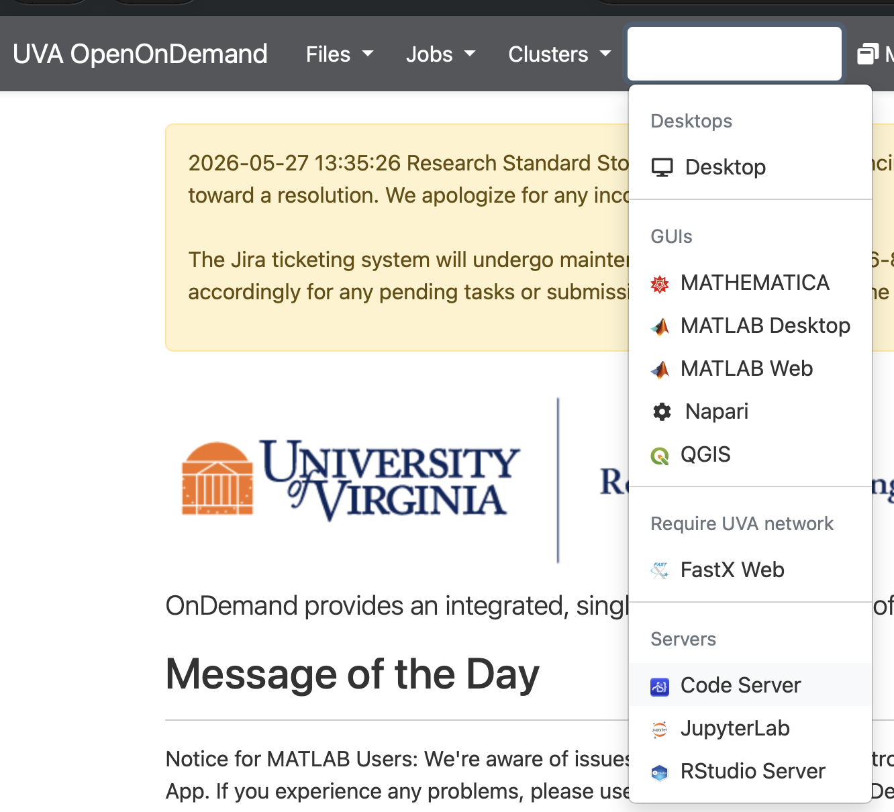
You'll see a form with these fields. Set them as below:
| Field | Value for this lab | Why |
|---|---|---|
| Rivanna/Afton Partition | GPU-MIG | A MIG slice (a fraction of an A100/H100) is enough for our depth-4 run, and these are far easier to get than a whole GPU node. Pick GPU-MIG, not GPU. |
| Number of hours | 4 | Depth-6 pretrain + SFT + chat; a MIG slice is slower than a full card, so give yourself the margin. |
| Number of cores | 2 | GPU-MIG allows 1–2 cores; 2 is plenty for the tokenizer and data loading. |
| Memory Request | 30 GB | Enough for the corpus shards + tokenizer in RAM at depth 4. |
| Allocation | your class allocation | Your instructor has the allocation code; ask before class. |
| Working Directory | /scratch/$USER | Where Code Server opens. Must be on /scratch — your home quota is tiny and slow. Do not leave this on HOME. |
The one field people get wrong: point Working Directory at /scratch/$USER (type the literal path with your own computing ID, e.g. /scratch/mst3k, if the form doesn't expand $USER). Home has a tiny quota and slow I/O — the corpus plus a single ~64 MB checkpoint will blow past it, and training will crawl or fail outright. Older screenshots may still show HOME; change it.
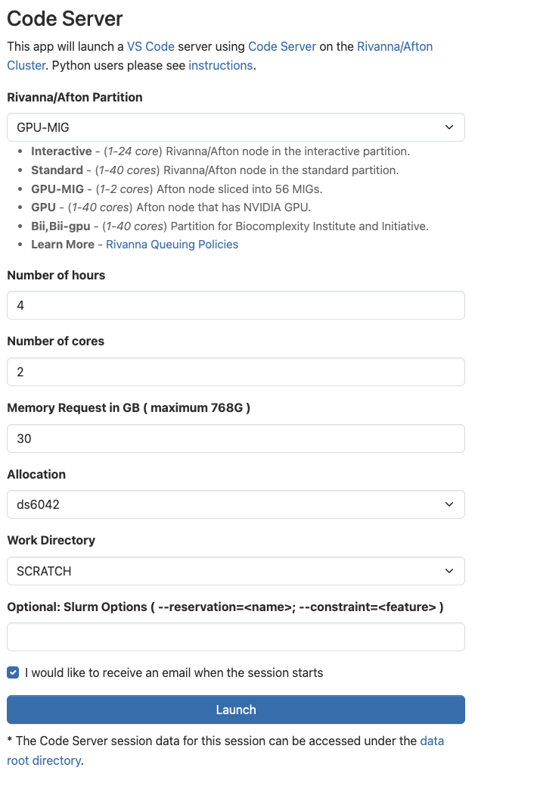
4.3 Wait for the job to start, then open Code Server
After you click Launch, OOD takes you to My Interactive Sessions. Your job card will sit in Queued state while SLURM finds a compute node that matches your request.
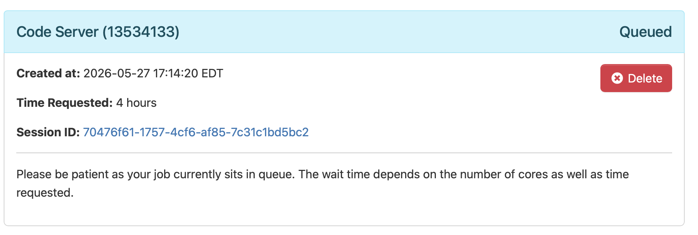
squeue from a terminal. Wait time depends on partition load and the resources you requested.Queue wait depends on cluster load — typically 1–5 minutes on the GPU-MIG partition during class hours. When the card turns green and shows "Running", click Connect to Code Server. A new tab opens with a full VS Code interface running on your compute node.
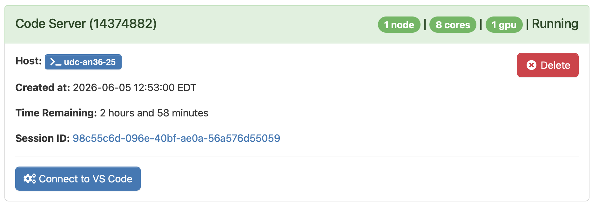
4.4 Open a terminal inside Code Server
You're now in VS Code running on the compute node. Every command for the rest of the lab gets typed into a terminal inside this tab. Open one from the hamburger menu (top-left): Terminal → New Terminal. The shortcut also works: Ctrl+` (backtick) on any platform; ⇧+⌘+C is the menu-shown chord on macOS.
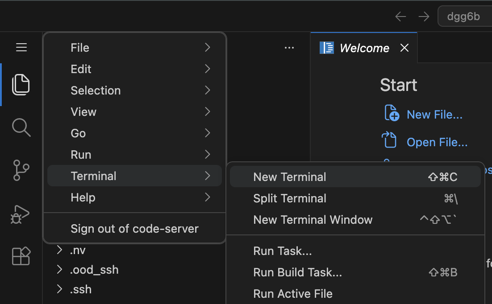
cd'd into your home directory on the compute node. Everything in §5 onward is typed here.5 · Clone and configure nanochat ~15 min
5.1 Clone into /scratch (not $HOME)
Your home directory has a small quota and slow I/O. Always stage code and data through /scratch/$USER/, which is fast SSD with a multi-TB quota.
$ cd /scratch/$USER && mkdir -p lab03 && cd lab03 $ git clone https://github.com/researcher111/nanochat.git Cloning into 'nanochat'... Receiving objects: 100% (1,247/1,247), 4.8 MiB | 9.2 MiB/s, done. $ cd nanochat
We clone the course fork (researcher111/nanochat), not Karpathy's original. It's identical upstream nanochat except for one patch to nanochat/ui.html: the web chat UI now makes page-relative API calls so it works through UVA Open OnDemand's reverse proxy (no more "Engine not running" / 404 in §7), and it's restyled in UVA Data Science colors — Jefferson navy and Cavalier orange. The training pipeline and every script are unchanged from upstream.
5.2 Load the right modules and create the environment
Rivanna/Afton uses module for software activation. You need CUDA and a recent gcc. First check what's actually installed today — RC updates these versions periodically, so the exact build that exists this semester may differ:
$ module spider gcc # lists every available gcc version — pick the highest 13.x if there is one, else 11.x or 12.x is fine $ module spider cuda # do the same for CUDA — pick the highest 12.x
Then load them. Substitute the exact version strings module spider printed:
$ module load cuda/12.4 gcc/11.4.0 # above is a current-as-of-spring-2026 default; if Lmod errors with # "The following module(s) are unknown", re-run module spider and # substitute the version it prints.
Lmod errors like The following module(s) are unknown: "gcc/13.3.0" mean the exact version pinned here is no longer on the cluster. Run module spider gcc (and module spider cuda) to see what RC currently ships, then load whichever versions it lists. nanochat compiles cleanly under any gcc 11+ and any CUDA 12.x. The same advice applies if RC migrates to a different CUDA major version: pin to what module spider shows, not to a date-stamped recipe.
nanochat uses uv (Astral's fast Python package manager) for dependencies. Install it once into your user directory, then sync nanochat's deps into a project-local .venv. Hover any line below for a one-sentence explanation of what it does:
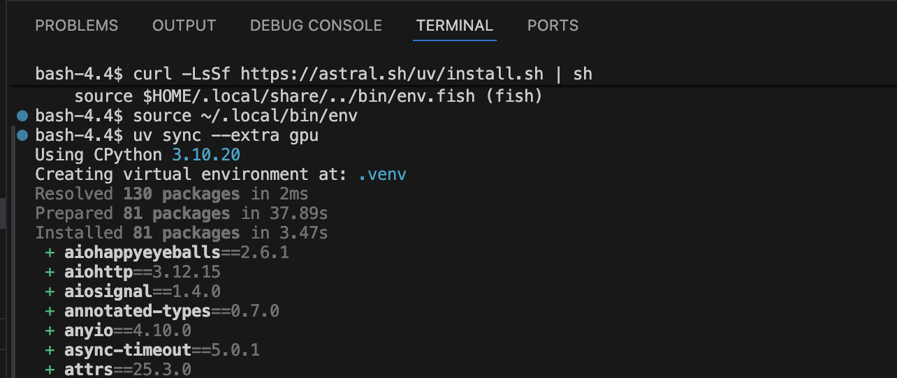
uv sync finishes you'll see the Installed N packages line in green and a long bulleted list of every package and its version printed to the terminal — that's normal, scroll past it.5.3 Pick a small-but-real depth
The default runs/speedrun.sh assumes 8×H100 and depth 24. We're running on a single GPU-MIG slice; let's pick depth 4 (≈16M parameters). A MIG slice is only a fraction of a full GPU, so it has less VRAM and runs slower — the wall-clock estimates later in the lab assume a dedicated card, so expect your run to take longer. Override the depth on the command line:
export DEPTH=4
export DEVICE_BATCH_SIZE=8 # MIG slice has limited VRAM; lower further if you OOM
export NANOCHAT_BASE_DIR=/scratch/$USER/lab03/nanochat
mkdir -p "$NANOCHAT_BASE_DIR"These three exports live only in this shell. If you close the terminal tab and open a new one (or your Code Server session restarts), re-run them. To make them permanent, append the three export lines to ~/.bashrc — but only after your first successful end-to-end run, so you don't bake in a typo.
OOM = CUDA Out Of Memory. If scripts.base_train dies with torch.cuda.OutOfMemoryError: Tried to allocate X GiB, the model needed more VRAM than your GPU has. The fix is to halve DEVICE_BATCH_SIZE and try again: 8 → 4 → 2. nanochat uses gradient accumulation, so dropping the per-step batch doesn't hurt the effective batch size — it just runs more micro-steps to compensate. Rule of thumb: a GPU-MIG slice (~20 GB) → start at 8 (drop to 4 if it still OOMs); a full A100-40 GB → 16; an H100-80 GB → 32 or 64.
5.4 · Read the source · common.py — the plumbing every script imports
Every script in the pipeline starts the same way: import common, call compute_init(), get back a device and the distributed-training coordinates. This file answers three questions once so no other file has to: what numeric precision should math run in, where do artifacts live on disk, and am I one process or one of eight. Two of its answers directly touched your run in §5–§6: NANOCHAT_BASE_DIR (the env var you exported) is read here, and the bf16_mfu column in your training log is computed against this file's table of per-GPU peak FLOPs.
bfloat16 (Ampere or newer GPUs), or fall back to float32. Hover a line for the details.get_base_dir() is why your single export NANOCHAT_BASE_DIR=… in §5.3 was enough to move the entire pipeline onto /scratch — every other module asks this function where to put things.The rest of the file is smaller utilities you can now read on your own: ColoredFormatter/setup_default_logging (the colored log lines in your terminal), download_file_with_lock (a file-lock so only one DDP rank downloads a shared file while the others wait), DummyWandb (a do-nothing stand-in so the code can call wandb.log(...) unconditionally whether or not you enabled experiment tracking), and get_peak_flops — a lookup table of each GPU's theoretical peak bf16 FLOPs. That last one is what turns your measured tokens/sec into the MFU (model FLOPs utilization) percentage in the §6.2 training log: achieved FLOPs ÷ peak FLOPs. If your GPU isn't in the table it returns infinity, so MFU shows 0% rather than a wrong guess.
6 · Run a small training ~60 min
Four scripts, in sequence. Watch each one finish before starting the next.
This is the long stretch of the lab — most of the ~60 minutes is the GPU training while you watch. Don't just stare at the loss: read the source as it runs — every long step in §6 is followed by a line-by-line, hover-annotated tour of the exact files doing the work (look for the read the source markers), and that reading is the single best use of this wait. Play with the scaling and command widgets in §6.2, read ahead to §7 · Talk to your model, and take the Lab 03 quiz on Canvas while it all trains.
6.0 Download the training corpus
nanochat trains on ClimbMix (the karpathy/climbmix-400b-shuffle dataset on HuggingFace), downloaded as parquet shards into $NANOCHAT_BASE_DIR/base_data_climbmix/. This step must run before §6.1 — tok_train.py reads the shards from disk and will exit with FileNotFoundError if they aren't there. How many shards you pull depends on whether you're doing the in-class run or the take-home assignment.
$ python -m nanochat.dataset -n 8
Downloads 8 training shards plus the validation shard — enough for the tokenizer and a depth-4 / 2,000-iteration run (which touches well under one shard). This is the exact command runs/speedrun.sh calls internally for its tokenizer stage. Don't run speedrun.sh itself: it ignores all flags and would kick off the full 8×H100 GPT-2-grade pipeline.
$ python -m nanochat.dataset -n -1
-n -1 downloads every shard — all 6,542 (~400 B tokens). Use this for the take-home assignment, where you train a larger model for longer. You can also pull an intermediate count (e.g. -n 170, what the GPT-2-grade speedrun uses) if you want more than 8 but not the whole set. The download resumes where it left off, so a killed job can be restarted with the same command.
The full 6,542 shards are roughly 650 GB on disk (~100 MB/shard) and take a long time to pull over the network — start it well before you need it, and confirm your /scratch quota has room (du -sh "$NANOCHAT_BASE_DIR"). For Option B, run the download inside an sbatch job or tmux session, not an interactive Code Server tab that times out. Even a large assignment model consumes only a fraction of 400 B tokens, so the speedrun's 170 shards is a sensible middle ground if you don't need the entire corpus.
$ ls "$NANOCHAT_BASE_DIR/base_data_climbmix" | head shard_00000.parquet shard_00001.parquet shard_00002.parquet ...
NANOCHAT_BASE_DIR is the variable nanochat actually reads — set it and everything lands under /scratch: the downloaded shards, the tokenizer, and every checkpoint (base_train, chat_sft, and chat_web all read and write here). If it's unset, nanochat defaults to ~/.cache/nanochat/ — the wrong place on Rivanna (home quota is tiny and slow). Run echo $NANOCHAT_BASE_DIR before downloading; if files ever show up under ~/.cache/nanochat, the variable didn't carry into this shell — re-export it.
read the source dataset.py — the corpus, shard by shard
The file behind §6.0. When you ran python -m nanochat.dataset -n 8, this file executed as a script (it's one of the two files in the package with a real __main__ block). Its whole job: download numbered parquet shards of the ClimbMix corpus from HuggingFace, and give other modules a clean iterator over the text inside them.
The download half (download_single_file plus the __main__ block) is straightforward but worth skimming in the real file for its production manners: each shard downloads to a .tmp file first and is os.renamed into place only when complete — that atomic rename is why a killed download never leaves a corrupt shard, and why re-running the same command resumes cleanly (existing files are skipped). Failures retry up to 5 times with exponential backoff (2, 4, 8… seconds), a multiprocessing.Pool pulls 4 shards in parallel, and the validation shard is always appended to the download list regardless of what -n you passed — which is how §6.0's Option A got you 9 files from -n 8.
6.1 Train the tokenizer
$ python -m scripts.tok_train --vocab-size 8192 max_chars: 2,000,000,000 doc_cap: 10,000 vocab_size: 8,192 rustbpe - INFO - Processing sequences from iterator (buffer_size: 8192) [tok_train] Computed BPE merges: 8192 entries [tok_train] Saved tokenizer to data/tokenizer.pkl elapsed: 8m 14s
We use vocab 8,192 instead of the default 32,768 to keep the model small.
What this phase does. BPE decides how to chop text into tokens by counting the most frequent adjacent byte pairs in the corpus and merging them, over and over, until the vocabulary is full. You can't train a model until you've decided how to tokenize — that's why this runs first. While the tokenizer trains, watch the algorithm build its first merges:
th, the, in, ing — purely from frequency.
the, ing, tion, the , http, def ) all collapse into single tokens. That is why GPT-2's vocabulary feels eerily English-shaped — it learned the chunks from frequency, not from grammar.
read the source tokenizer.py — text ⇄ tokens
This is the file behind §6.1. It holds two parallel tokenizer implementations — a HuggingFace-based one kept for reference, and the one nanochat actually uses: train with rustbpe (a small Rust BPE trainer Karpathy wrote for the project — it did the fast merge-counting while your §6.1 run printed rustbpe - INFO lines) and run inference with tiktoken (OpenAI's fast BPE encoder). Training BPE and using BPE are different workloads, so nanochat picks the best tool for each and glues them together. The file also owns something subtler and just as important: render_conversation(), the function that defines what a chat is, in tokens — including the loss mask you met in §6.3.
rustbpe does the once-per-project training, tiktoken does the billions of encode calls afterwards. The pickle file bridges them across pipeline phases.read the source scripts/tok_train.py — the 106-line driver you just ran
The script behind your §6.1 command is short enough to read in full. It has exactly four moves — and the last one quietly sets up a metric you'll meet in §6.2. One dependency note: the heavy lifting is done by rustbpe, which is not in this repo — it's a separate ~500-line Rust crate (github.com/karpathy/rustbpe) that uv sync installed as a package in §5.2. Rust does the merge-counting over gigabytes; Python does everything else.
scripts/tok_eval.py then scores the result: compression ratio on held-out text, compared head-to-head against GPT-2's and GPT-4's tokenizers.6.2 Pretrain the base model
--master_port
torchrun opens a rendezvous port on the node to coordinate processes. On a shared Rivanna/Afton node, two people (or two jobs) using the same port collide — the second one dies with RuntimeError: Address already in use. Change 29500 to a different number (any free port, roughly 20000–60000). If you'd rather not coordinate, derive a per-user port from your username so it's unique automatically ($UID is empty in some HPC shells, so we hash $USER instead):
$ export MASTER_PORT=$(( ($(echo "$USER" | cksum | cut -d' ' -f1) % 20000) + 20000 ))
…then pass --master_port=$MASTER_PORT below. If you still hit "address already in use," that exact port is taken — just bump the number and rerun.
$ torchrun --nproc_per_node=1 --master_port=$MASTER_PORT -m scripts.base_train \ --depth $DEPTH --device-batch-size $DEVICE_BATCH_SIZE \ --num-iterations 2000 2>&1 | tee train.log [base_train] Model has 16.4M parameters [base_train] step 0 | loss 9.21 | tokens/s 12,400 [base_train] step 100 | loss 6.43 | tokens/s 88,200 [base_train] step 500 | loss 4.18 | tokens/s 91,500 [base_train] step 1000 | loss 3.61 | tokens/s 91,800 [base_train] step 2000 | loss 2.97 | tokens/s 91,800 [base_train] saved base_model.pt (64 MB) elapsed: 13m 12s · final loss 2.97 · CORE n/a (too small)
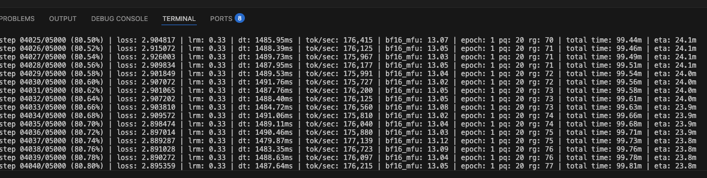
loss falling toward ~2.9, dt (ms/step), tok/sec (~176k here), bf16_mfu (model-FLOPs utilization — roughly how busy the GPU is, ~13%), and eta. This capture is from a default 5,000-step run (≈99 min total); the lab uses --num-iterations 2000, so your step counter stops at 2000 and your eta bottoms out around ~15 minutes.Pretraining is the longest single step — don't just watch the loss tick down. Use the time to take apart the command and the scaling widgets just below (and remember the read-ahead plan from the top of §6).
Loss starts around 9 (random) and falls toward 3 within 2,000 steps — the model has learned English at a basic level. Pretty good for ~15 minutes on a single GPU.
nanochat prints the loss to the terminal but doesn't save a curve. That's why the pretrain command above ends in 2>&1 | tee train.log — it saved every step line to train.log as it ran. Now turn that log into a plot. In Code Server make a new file plot_loss.py (File → New File), paste this in, and run python plot_loss.py — matplotlib is already in the venv:
import re, matplotlib
matplotlib.use("Agg") # headless compute node — write a file, don't open a window
import matplotlib.pyplot as plt
steps, losses = [], []
for line in open("train.log"):
m = re.search(r"step\s+(\d+)/\d+.*?loss:\s*([\d.]+)", line)
if m:
steps.append(int(m.group(1)))
losses.append(float(m.group(2)))
plt.figure(figsize=(7, 4))
plt.plot(steps, losses, lw=1)
plt.xlabel("step"); plt.ylabel("loss")
plt.title(f"base_train · depth 4 · {len(steps)} steps")
plt.grid(alpha=0.3); plt.tight_layout()
plt.savefig("loss.png", dpi=120)
print(f"wrote loss.png ({len(steps)} points)")Click loss.png in the Code Server file explorer to open it. You'll get your own version of this:
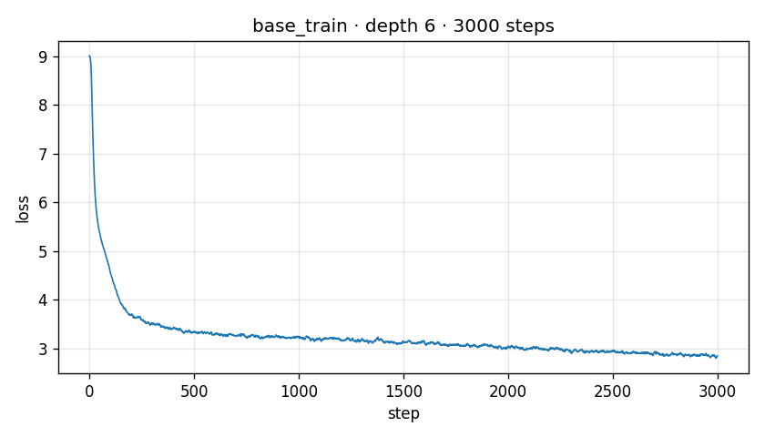
plot_loss.py produces from train.log (this example is a 3,000-step run; with --num-iterations 2000 you stop a little earlier, on the same flat part). The slope flattens by ~1,500 steps — at this scale the model has learned what it's going to learn from this dataset. Going further with more compute (depth 8, 10k steps) gets a meaningfully better model; depth 24 with 25k steps is GPT-2 quality.What this phase does. It trains the base GPT to predict the next token on raw text — the single longest step in the pipeline (2–3 hours on 8×H100 at depth 24; ~12 minutes on a full GPU at depth 4, longer on the MIG slice we booked). What you get is a language model that completes sentences fluently but doesn't yet know what a chat is — that's the next phase's job.
d_model — the count of numbers in each token's vector (the residual-stream width), which is also the side length of every Q, K, and V attention matrix.
Everything from here to §6.3 is reading matter for exactly this moment — the GPU is busy, and these are the files doing the work, in the order the data flows through them. Hover any highlighted line. If you need to keep moving, skip to §6.3 and come back during the SFT wait.
read the source dataloader.py — documents → training batches
Between the raw text of dataset.py and the (B, T) token tensors that gpt.py consumes sits one deceptively hard problem: packing. Documents have wildly different lengths; GPU batches are rigid rectangles of exactly B×T tokens. Pad the leftovers and you waste compute on padding; concatenate documents end-to-end (what many trainers do) and tokens from one document attend into an unrelated previous document. nanochat's loader takes a third path, BOS-aligned best-fit packing: every row starts with a fresh document at its BOS token, rows are filled by choosing buffered documents that fit well, and when nothing fits the remaining gap is filled by cropping a document. The cost is honest and documented — roughly 35% of tokens get cropped away at T=2048 — in exchange, every token in every batch can see its document's beginning, and no token ever attends across a document boundary.
Nothing in this file is "just engineering." Whether a token can attend to its document's start, whether batches contain padding, whether two unrelated documents bleed into each other — these change what the model learns. The file's own docstring quantifies the trade honestly: this loader discards ~35% of tokens to guarantee clean attention, and points to the older concatenating loader for the data-scarce case where that trade flips. When you read a training paper's "data pipeline" section, this is the kind of decision it's describing.
read the source gpt.py — the Transformer, production-shaped
The heart of the repo, and the file to read slowest. Everything you hand-traced in Lab 02 is here — embeddings, attention, MLP, residual stream, lm_head — plus the handful of modern refinements that separate a 2019-style GPT from a 2025-style one. Keep this correspondence table open as you read:
| Lab 02 · microGPT | nanochat · gpt.py | What changed and why |
|---|---|---|
wpe learned position table | rotary embeddings (apply_rotary_emb) | Positions are encoded by rotating Q and K, so attention sees relative distance — generalizes better and needs no learned table |
rmsnorm(x) helper | norm(x) = F.rms_norm | Identical idea; nanochat's version has no learnable scale at all |
attn_wq/wk/wv/wo | c_q/c_k/c_v/c_proj | Same four matrices, plus QK-norm and grouped KV heads |
| per-head Python loops | flash_attn fused kernel | Same math, executed in one GPU kernel that never materializes the T×T score matrix |
relu(x) in the MLP | relu(x)² | Squared ReLU — a small, consistently-measured quality win |
| KV cache as Python lists | KVCache tensor class (in engine.py, §7.1) | Same concept; pre-allocated GPU tensors instead of lists |
| plain SGD/Adam on a flat param list | Muon + AdamW, parameters split by role | Matrices and embeddings want different update rules (below) |
apply_rotary_emb — six lines that replace microGPT's entire learned position table. The trick: don't add a position signal to the token, rotate pairs of Q/K channels by an angle proportional to the token's position. Panel 1 shows how one position number becomes a whole bank of rotations; panel 2 shows why the attention score then depends only on the distance between two tokens.
Each dial is one pair of channels of a query/key head — the x1, x2 halves in the code. Its hand sits at angle m·θc, and the frequencies θc = base−2c/d (the inv_freq line you just hovered) fall off geometrically: pair 0 whips around every few tokens (tells neighbors apart), pair 7 barely creeps (tells paragraphs apart). The full set of hand angles is the position encoding — read it like a clock: fast hands for fine position, slow hands for coarse.
i−j only, so a pattern learned between positions 5→3 automatically works between 1005→1003 — nothing to learn, nothing to store. It also explains a line in GPT.forward below: with a KV cache, the rotary slice starts at T0 = kv_cache.get_pos() — cached keys were rotated by their absolute position once, and stay valid forever. (One nanochat wrinkle after rotation: Q and K get RMS-normalized — QK norm — then scaled ×1.2 for sharper attention.)
Block.forward lines last: that's the whole architecture in two statements.Two lines of init_weights() explain your §6.2 log. lm_head is initialized with std 0.001 — essentially zero — so at step 0 all logits are ~equal and the model predicts the uniform distribution: loss = ln(vocab) = ln(8192) ≈ 9.01, right where your log started. And every c_proj/mlp.c_proj is initialized to exact zeros, so at step 0 each block contributes nothing and the whole network is the identity function on its embeddings — training starts from "do nothing" and learns which deviations help. Also in init_weights: matrices use uniform (not normal) init at matched std, deliberately avoiding rare outlier weights.
The rest of the file, briefly: GPT.__init__ builds the module tree — with a footgun its own comment warns about: it runs under PyTorch's meta device (shapes only, no memory), so all real initialization lives in init_weights(); this is what lets checkpoint_manager (§7.1) construct multi-GB models instantly before streaming weights in. _compute_window_sizes() expands "SSSL" into per-layer (left, right) window tuples. estimate_flops() implements the standard "6 FLOPs per parameter per token" accounting (plus attention terms) — the denominator of your log's MFU number. setup_optimizer() sorts parameters into seven groups — matrices to Muon; embeddings, lm_head, and the scalars to AdamW, each with its own learning rate — which is the story of the optimizer tour below. And generate() is the deliberately naive sampler: no KV cache, re-forwards the whole growing sequence for every new token. It exists as the readable reference implementation the fast engine (§7.1) is tested against — a pattern worth stealing: keep the slow, obviously-correct version around to test the fast one.
read the source flash_attention.py — one API, two engines
The attention math you just read is executed by whichever of two backends this file selects at import time: Flash Attention 3 — hand-tuned CUDA kernels that only exist for Hopper GPUs (H100-class, CUDA SM 9.0) — or PyTorch's built-in scaled_dot_product_attention (SDPA) everywhere else. The rest of the codebase neither knows nor cares which one it got: this file exports a flash_attn namespace whose two functions exactly mimic FA3's signatures. This is the "one or two performance optimizations" the §1 insight callout promised, and it's also why the same code ran on your MIG slice, would run on an H100 pod, and even runs on a laptop CPU.
S to see what nanochat's sliding-window layers skip entirely.
gpt.py contains zero if USE_FA3 checks — all portability lives in this one file.read the source optim.py — Muon + AdamW, and why there are two
Lab 02 updated every parameter with the same rule. nanochat splits parameters by shape and role: the transformer's 2-D weight matrices go to Muon (an optimizer from the nanogpt-speedrun community that orthogonalizes each update), while embeddings, the lm_head, and the per-layer scalars go to AdamW. The intuition for Muon: a weight matrix's gradient update is itself a matrix, and most of its "energy" concentrates in a few directions — orthogonalizing the update (making all its singular values equal) spreads learning across all directions of the matrix instead of letting a few dominate. In practice it trains transformers meaningfully faster per step than AdamW. Embeddings aren't matrices in this sense (each row updates independently as one token's vector), so they keep AdamW.
The two classes wrapping these kernels are where single-GPU and multi-GPU part ways. MuonAdamW (your run) just loops over parameter groups calling the right fused step. DistMuonAdamW — selected automatically when get_dist_info() reports DDP — is the sophisticated one: instead of PyTorch's DDP wrapper it implements a ZeRO-2-style sharded optimizer in three async phases: (1) launch all gradient reduce_scatters at once so communication overlaps with compute, (2) as each group's average gradients arrive, each rank computes updates for only the slice of parameters it owns (optimizer state is likewise sharded — 8 GPUs each store ⅛ of the momentum buffers), then launches the all_gather that redistributes updated weights, (3) wait for the gathers and copy back. Its 60-line docstring explaining this choreography is some of the best free education on distributed training you'll find; read it before Lab 12's deployment discussions.
read the source fp8.py — the optional speed demon
The newest file in the package, and the most self-documenting: its 70-line docstring is a better FP8-training tutorial than most blog posts. The idea: on H100-class GPUs, matmuls in 8-bit floating point run ~2× faster than bf16. But FP8's range is so narrow that you can't just cast — each tensor is dynamically rescaled to fit: compute scale = FP8_MAX / max(|tensor|), quantize, matmul via torch._scaled_mm (which folds the inverse scales back in), all wrapped in a custom autograd function so backward's two gradient matmuls also run in FP8. Even the format choice encodes a lesson: activations and weights use e4m3 (more precision bits), gradients use e5m2 (more range bits — gradients spike). The file exists to replace ~2,000 lines of the torchao library with ~150 focused ones, and its docstring explains precisely what trade-off that makes under torch.compile. It's used by the optional mid_train stage on Hopper hardware; your MIG run never touched it — read it as a preview of how production training squeezes the last 2×.
read the source loss_eval.py + core_eval.py — measuring the thing you trained
loss_eval.py is 65 lines that fix a subtle measurement bug. Comparing raw validation loss across tokenizers is apples-to-oranges: a model with a bigger vocabulary packs more text into each token, so its per-token loss is naturally higher even if it models text equally well. The fix is bits per byte (bpb): sum the loss (in nats) over all evaluated tokens, independently sum how many bytes of text those target tokens represent, and divide (with a ln 2 factor to convert nats→bits). The token_bytes lookup table (written by tok_train, loaded by §6.1's get_token_bytes) maps every token id to its byte length — with special tokens mapped to 0 so they're excluded from the metric entirely. Result: a number you can compare across any two models, any two tokenizers. That's the metric base_train reports on validation data.
core_eval.py implements the CORE benchmark from the DCLM paper — the metric Karpathy uses to compare nanochat runs against GPT-2. It scores a base model (no chat, no instructions) on 22 tasks of three shapes, and the scoring trick for each is worth knowing:
- Multiple choice (e.g. HellaSwag): render the question once per answer option, so all prompts share a common token prefix and differ only in the continuation. Forward all options as one batch; the model's "answer" is the option whose continuation tokens have the lowest mean loss — no generation, no parsing, just "which ending did you find least surprising?"
- Schema (e.g. Winograd): the mirror image — the contexts differ and the continuation is shared (a common token suffix), same lowest-mean-loss rule.
find_common_length()locates the shared prefix/suffix in token space. - Language modeling (e.g. LAMBADA): the model must get the continuation exactly right — every argmax prediction over the continuation span must match. Scored from one forward pass by comparing
predictions[si−1:ei−1]against the actual tokens (that off-by-one is the autoregressive shift again).
Few-shot examples are sampled with a per-example seeded RNG (random.Random(1234 + idx) — deterministic, so every run and every rank sees the same few-shot draws), examples are strided across DDP ranks just like row groups were in §6.0, and the final CORE number is each task's accuracy centered against a random-guessing baseline (that last step lives in the calling script, scripts/base_eval.py). Your depth-4 model's CORE will be humble — the §6.2 log said "CORE n/a (too small)" — but at depth 24+ this is the number that certifies "GPT-2 grade."
Three thin scripts drive these evaluators: scripts/tok_eval.py (tokenizer compression, benchmarked against GPT-2's and GPT-4's tokenizers on held-out text), scripts/base_eval.py (downloads the CORE eval bundle, runs all 22 tasks, applies the random-baseline centering), and scripts/chat_eval.py (the post-SFT counterpart: ARC, MMLU, GSM8K, HumanEval, SpellingBee against the tasks/ definitions — used for the ChatCORE number in §6.3).
read the source scripts/base_train.py — the conductor
You've now read every instrument; this 630-line script is the orchestra. It wires together the dataloader, the model, the optimizer, the evals, and the checkpointer — and it's the process that has been printing your log lines this whole time. Two parts deserve a close read. The first is unusual among small training repos: the hyperparameters tune themselves. You passed --depth and a batch size; everything else is derived, using scaling laws measured in dev/LOG.md:
--depth" — the script computes the training horizon, batch size, learning rates, and weight decay that fit whatever depth you chose.The second part is the loop itself — the shape is exactly Lab 02's train loop, plus scheduling, gradient accumulation, and prefetching:
Every field in the line you've been watching comes from this script: step 00500/02000 (loop counter / computed horizon) · loss (an EMA-smoothed, debiased training loss — not the raw per-step value, which is noisy) · lrm (the LR multiplier from the trapezoid schedule) · dt (wall-clock per step) · tok/sec (batch tokens ÷ dt) · bf16_mfu (achieved FLOPs ÷ the peak-FLOPs table in common.py) · epoch/pq/rg (the dataloader's resume cursor — which parquet file and row group it's reading) · eta (average step time × steps remaining, excluding the first 10 warmup-jittered steps). Around the loop, the script periodically runs the bits-per-byte eval (every 250 steps), the CORE benchmark (every 2,000), and — most charming — samples from the model every 2,000 steps on seven fixed prompts ("The capital of France is…"), so you can literally watch fluency emerge in the logs.
6.3 Supervised fine-tune for chat
$ python -m scripts.chat_sft --num-iterations 800 [chat_sft] Loaded base model: 16.4M params [chat_sft] step 0 | loss 4.18 [chat_sft] step 100 | loss 2.91 [chat_sft] step 800 | loss 2.04 [chat_sft] saved sft_model.pt (64 MB) elapsed: 14m 22s
This is the phase that makes the model chat. The training data shifts from raw text to dialogues formatted as <user>... </user> <assistant>... </assistant> turns. The model learns the conversational shape on top of the language it already knows.
SFT is short by design — it teaches the conversational shape, not new knowledge, so it needs far less compute than pretraining. Left to its default, chat_sft runs a single epoch over nanochat's small SFT mixture — about 100 steps in ~2 minutes. We pass --num-iterations 800 to make a few passes, which noticeably sharpens the chat behavior. Running low on session time? Use --num-iterations 100 — one quick epoch still gives a working chat model. Don't go overboard: past a couple of epochs you mostly overfit the small SFT set, and the real ceiling on chat quality at depth 4 is the base model, not how long you SFT.
What does an SFT training datum look like, and what does the script actually do that pretraining didn't? Two pieces — the data, and the masked loss:
# scripts/chat_sft.py — the two pieces that matter, simplified.
# (1) One SFT training datum: a chat-formatted dialogue, written
# as one long string with special tokens marking the turns.
example = (
"<|user|> What is the capital of France? <|end_of_turn|> "
"<|assistant|> The capital of France is Paris. <|end_of_turn|>"
)
# (2) Tokenize the whole thing like pretraining did — one stream of
# token ids. Then shift by one to get input / target pairs.
tokens = tokenizer.encode(example)
input_ids = tokens[:-1] # what the model sees
target_ids = tokens[1:] # what it must predict next
# (3) The SFT trick: only compute the loss on ASSISTANT tokens.
# We do NOT want to train the model to write the user's turn —
# the user wrote that. We only want it to learn to predict
# the assistant's reply (and the end-of-turn token that stops it).
loss_mask = is_assistant_token(target_ids) # 1 on assistant tokens, 0 on user tokens
logits = model(input_ids) # next-token logits, same forward pass as pretrain
losses = cross_entropy(logits, target_ids)
loss = (losses * loss_mask).sum() / loss_mask.sum() # average over assistant tokens only
loss.backward()
optimizer.step()That's it — the architecture, the forward pass, and the optimizer are all the same as Phase 2. The only differences are the data (chat-formatted dialogues instead of raw web text) and the loss mask (skip the user's tokens). Fifteen minutes of this is enough to turn a "continues web text" base model into a "answers questions and stops" chat model.
<|end_of_turn|> token at a sensible stopping point; (3) adopt the helpful-assistant persona that the training dialogues all share.
read the source tokenizer.py — render_conversation, where the SFT mask is born
Now the most consequential function in tokenizer.py — the half we skipped in §6.1 because it belongs to this phase. The simplified SFT datum above used a stand-in is_assistant_token() mask; here is where the real mask comes from. render_conversation() turns a structured chat (a list of messages) into two parallel lists: token ids, and a 0/1 mask marking which tokens the model should be trained to produce:
Two smaller pieces complete the file: render_for_completion() (used in RL — renders the conversation minus the final assistant message, then appends a bare <|assistant_start|> to prime the model to generate; no mask needed because RL scores whole samples), and visualize_tokenization(), a debugging gem that prints a rendered conversation with supervised tokens in green and unsupervised in red. Try it in a Python shell on Rivanna — it makes the mask instantly visible. Module-level get_tokenizer() is the one-liner every script uses to load tokenizer.pkl from the base directory.
read the source scripts/chat_sft.py + tasks/ — the mixture that makes it chat
With render_conversation understood, the SFT script holds two remaining secrets: what conversations the model learns from, and how they're batched. The "what" lives in tasks/ — each file there wraps one dataset in a tiny common interface (a Task is a dataset of conversations plus an evaluation rule), and TaskMixture deterministically shuffles several together. The recipe is worth reading closely, because this list is the entire personality curriculum of your chatbot:
While it trains, the script periodically scores itself with ChatCORE (via scripts/chat_eval.py): ARC-Easy/Challenge, MMLU, GSM8K, HumanEval, and SpellingBee, each accuracy centered against its random-guessing baseline. That HumanEval entry is where §7.1's execution.py sandbox earns its keep — the model's generated code actually runs.
6.4 (optional) Reinforcement learning
The timed lab stops after SFT — but if you have GPU time left, there's a fourth training phase. It uses GRPO (Group Relative Policy Optimization) to push the SFT model toward preferred responses — the algorithm DeepSeek popularized, which needs no separate reward model. Output: rl_model.pt. Wall time: ~20 minutes at depth 4. What you get: noticeably better answers on reasoning tasks (GSM8K, ARC).
$ python -m scripts.chat_rl
Skip it if your job time is running low; the chat model from §6.3 is enough for the assignment. While it runs, here's the core idea — sample, score, reinforce:
1 if it matches the ground truth, 0 if not). Subtracting the group mean and dividing by the group's standard deviation turns each raw reward into an advantage: positive for completions that beat their group, negative for ones that lagged. That's the signal GRPO trains on — no separate reward model, just each completion measured against its own group.
read the source scripts/chat_rl.py — "GRPO", with the quotes explained
The script's own docstring puts GRPO in scare quotes and lists why, and it's the best two-minute read on how research algorithms shed complexity in practice. Starting from PPO-flavored GRPO, nanochat deletes: the KL penalty against a reference model (gone — no trust region), the PPO ratio-and-clip machinery (unnecessary — training is fully on-policy), and even the division by the group's standard deviation (the widget above showed classic GRPO's (r−μ)/σ; the code keeps only r−μ, DAPO-style). What's left is nearly vanilla REINFORCE with a group-mean baseline:
7 · Talk to your model ~10 min
Your model is trained. There are two ways to talk to it: a terminal chat (fastest, always works) and a browser chat UI (nicer, but needs a little proxy wrangling on Rivanna). Start with the terminal.
7.1 Chat in the terminal
The simplest interface — no web server, no port forwarding, no proxy in the way:
$ python -m scripts.chat_cli # add -i sft if it doesn't default to your SFT model
Type a prompt and the model streams its reply right in the terminal. Try a few — at depth 4 the answers are short, sometimes incoherent, occasionally surprisingly competent. The "wow" isn't quality; it's that any coherent text comes back from ~16M parameters you trained in under an hour.
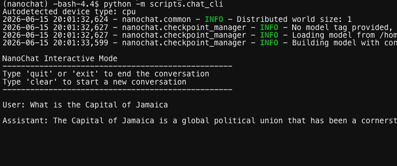
chat_cli terminal session. Ask it the capital of Jamaica and the depth-4 model confidently answers "a global political union…" — exactly the "early-2019 chatbot" quality you'd expect: fluent, grammatical, and wrong. That's the lesson: the gap between this and GPT-4 is roughly 10,000× more compute and 100× more parameters. Everything else is the same code path.read the source scripts/chat_cli.py — a chatbot in 100 lines
The program you're talking to is disarmingly small, and reading it closes the loop on the chat format: the "conversation" is nothing but a growing list of token ids that you help assemble.
read the source checkpoint_manager.py — how chat found your model
The pipeline's phases are separate processes that may run hours apart, so everything they share goes through disk. This file defines that contract. Each checkpoint is three files — model_<step>.pt (the weights), meta_<step>.json (human-readable metadata: the GPTConfig, step count, loss), and optim_<step>_rank<r>.pt per rank (remember the §6.2 optimizer tour: state is sharded, so each of N GPUs saves its own 1/N — a detail that surprises people the first time a resume needs the same world size). Checkpoints from each phase live under their own directory in the base dir: base_checkpoints/, chatsft_checkpoints/, chatrl_checkpoints/, each keyed by model tag (d4 for depth 4).
read the source engine.py — serving tokens fast (and the tool-use state machine)
Everything so far was training. This file is inference — what ran when you chatted with your model in §7. It does two jobs: make generation fast (a real pre-allocated KV cache, batched sampling, one-token forward passes), and make generation interactive with tools (the state machine that notices the model calling Python and feeds the answer back in). Note the layering discipline stated in its docstring: the engine speaks only token ids — tokenization stays in tokenizer.py (§6.1), the web/CLI layers above handle text.
GPT.generate (§6.2), which re-forwards the entire sequence every token.use_calculator with your red-team hat on
The expression evaluator at the top of engine.py is a perfect specimen for this course. It runs model-emitted text through Python's eval(), guarded by: stripping commas, an allowlist of characters, a blocklist of dangerous substrings (__, import, exec, getattr, …), a requirement that non-arithmetic expressions contain .count(, a 3-second timeout, and eval(expr, {"__builtins__": {}}, {}) to empty the builtins. That's five layers of mitigation around a fundamentally dangerous primitive — and blocklist-based eval sandboxing has a long history of bypasses in CTFs. It's defensible here (hobby scale, model's own output, no untrusted multi-user input) but pause on the question you'll keep meeting in Labs 05–07: when a model's output becomes an execution input, whose input is it really? If a user can prompt-inject your model into emitting <|python_start|>…, the "model's own output" is attacker-controlled.
read the source execution.py — running the model’s code (carefully)
Where engine.py's calculator evaluates single expressions, this file runs whole model-written Python programs — it's used by the coding evals (HumanEval-style tasks), and it's adapted directly from OpenAI's HumanEval harness. Its opening docstring is a model of honest threat modeling: it lists exactly what is covered (separate killable process, timeout, 256 MB memory cap, captured stdout/stderr, temp directory, dangerous functions disabled) and exactly what is not (network access, ctypes escapes, no kernel-level isolation) — ending flatly: "not safe against malicious adversarial code." Compare that candor to the average vendor security page.
7.2 (Optional) The browser chat UI
nanochat also ships a ChatGPT-style web UI (FastAPI + Uvicorn) on port 8000. The Code Server trick is that you can port-forward that 8000 back to your laptop's browser. Launch the server:
$ python -m scripts.chat_web --port 8000 Starting NanoChat Web Server Loading nanochat models across GPUs... INFO: Uvicorn running on http://0.0.0.0:8000
No model path needed. chat_web auto-loads your latest SFT checkpoint from chatsft_checkpoints/. Do not pass --model …: argparse prefix-matches it to --model-tag, so this version treats the path as a checkpoint tag and dies with No checkpoints found.
Then forward the port: Code Server runs inside Open OnDemand, which auto-forwards the ports your server opens. Open the Ports tab in the bottom panel and find the row for port 8000 (if it's not there, click Forward a Port and enter 8000). Its Forwarded Address is an ood.hpc.virginia.edu/rnode/… URL; Cmd/Ctrl-click it (or the globe icon) to open the chat UI in your browser.
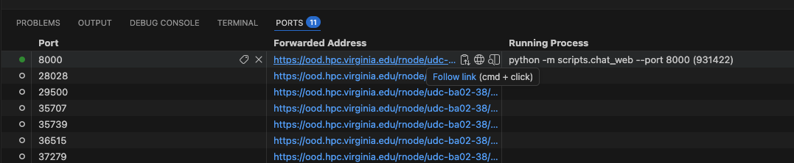
ood.hpc.virginia.edu/rnode/… address — the Running Process column shows python -m scripts.chat_web --port 8000 behind it. Cmd/Ctrl-click that address (or the globe icon) to open your model's chat UI in a new browser tab.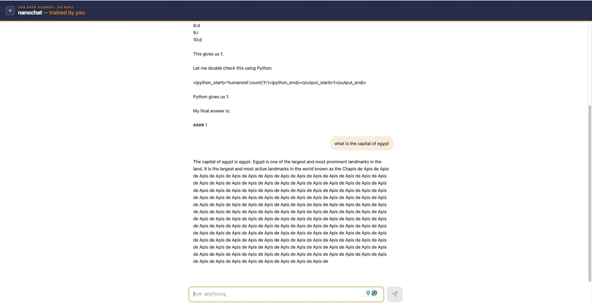
The course fork already fixes this, so you shouldn't hit it — but it's worth knowing. Upstream nanochat/ui.html sets const API_URL = '', so its fetches to /chat/completions and /health are rooted at the domain. Behind OOD the page lives at ood.hpc.virginia.edu/rnode/…/8000/, so those absolute paths skip the rnode/…/8000/ prefix and 404 — and the UI reports "Engine not running" (the engine is actually fine; it runs inside chat_web). The fork sets const API_URL = window.location.pathname.replace(/\/$/, '') so the calls inherit the proxy prefix. If you ever run upstream nanochat behind a proxy and see the 404, that one-line change is the fix — or just use the terminal chat in §7.1.
ui.html is the entire chat frontend — one self-contained HTML file with inline CSS and JS, no framework, no build step, served by chat_web's FastAPI server. It streams tokens from /chat/completions and renders them incrementally. This is the one file the course fork changes: upstream pins const API_URL = '' (absolute paths — which break behind Open OnDemand's /rnode/…/8000/ proxy prefix, the §7.2 story), while the fork computes it from window.location.pathname so the API calls inherit whatever prefix the page was served under. Plus UVA navy and orange. Diff the fork against upstream and the entire delta is that one constant and a stylesheet.
scripts/chat_web.py is the server behind it — and the most "production-shaped" file in the repo: a FastAPI app with a worker pool (one Engine pinned to each available GPU; requests queue for a free worker), Pydantic request validation with abuse limits, and /health and /stats endpoints. Its streaming generator hides one lovely real-world detail: tokens are byte chunks, and a multi-byte character (an emoji, a CJK glyph) can be split across two tokens — so the server decodes the accumulated sequence each step and only emits text once it no longer ends in a dangling partial character (the replacement glyph). Every streaming chat UI you've used solves this exact problem somewhere.
You took raw English text → trained a tokenizer on it → trained a small transformer on it from scratch → continued training on dialogue formats → served it behind a chat UI → talked to it from your laptop. You built an LLM. The fact that it's a small one is incidental; the pipeline is the production one. Every commercial chatbot you've ever used was made this way, just bigger and longer.
report.py generates the "report card" — every script appends its section (git commit, hardware, hyperparameters, eval results, wall-clock) into a markdown file in the base dir, and at the end of a full run you get the one-page summary like the one on the nanochat README. It's also where the total cost of a run gets estimated from GPU-hours. Messy, honest bookkeeping code ("More messy code than usual, will fix" — its own docstring).
Between §5.4 and here you have read (or know exactly where to find) every load-bearing line in nanochat/: how text becomes tokens (§6.1), tokens become batches (§6.0, §6.2), batches train a transformer (§6.2), weights persist (§7.1), and a trained model serves a conversation with tools (§7.1) and gets measured (§6.2). The natural next reading is scripts/ — each script is now just "wire together things I understand": base_train.py is the dataloader + model + optimizer in a loop with a learning-rate schedule; chat_sft.py is render_conversation (§6.3) feeding the same loop with targets set to −1 where mask is 0; chat_web.py is the checkpoint loader + engine behind FastAPI. Nothing in the repo is magic anymore.
8 · Best practices · for nanochat and for HPC
/scratch. Faster I/O, larger quota. $HOME is for dotfiles and small scripts; /scratch is for datasets, checkpoints, virtualenvs.nvidia-smi. If you see GPU at 50% during training, your data loader is the bottleneck — bump the worker count or move data closer to /scratch. A GPU sitting idle is a research-allocation waste.tmux or screen for long-running terminals. Code Server's browser tab can disconnect; without a multiplexer, your training run dies with the tab. tmux new -s train; python -m scripts.base_train ...; (detach Ctrl-b d).sbatch. Interactive Code Server sessions are great for development and short training. Real overnight training goes in a batch script. The repo has examples in runs/speedrun.sh.--depth. If loss decreases too fast (loss < 1 in 100 steps), you're overfitting on a tiny dataset.scancel the moment you're done. Don't wait for the time-limit to expire. Your job is holding a GPU someone else could be using.9 · Anti-patterns
- Running pretraining on a CPU. Possible —
runs/runcpu.shexists — but absurdly slow. Use it once to feel the difference, then go back to the GPU. - Holding a GPU job idle. "I'll come back to it after lunch" + a 4-hour job + you forgetting = wasted allocation. Use
scancelthe moment you're done. - Skipping SFT and chatting with the base model. The base model completes text; it doesn't chat. You'll get rambling completions, not answers. Always run
chat_sft.pybeforechat_web.py. - Training with
--depth 24on a single MIG slice. Yes, it works. No, it doesn't finish in your 4-hour window. Match depth to the resources you booked. - Treating CORE / loss as the only quality signal. CORE is a single number; talking to the model for ten minutes tells you things CORE cannot. Always end with a hands-on chat session.
Assignment · train and ship your own chat model
Train a chat model end-to-end on Rivanna/Afton, evaluate it, and write up what you learned. The deliverable is a small repo + a short report + your model's chat transcript.
What you train
- Pick a depth between 4 and 10. Depth 4 finishes faster; depth 10 produces noticeably better answers; depth 6–8 is the sweet spot for one 4-hour Code Server session.
- Run the full pipeline: tokenizer → pretrain → SFT → (optional RL) → chat. Use the commands in §6, adjusted for your depth.
- Save the loss curve from each stage, the model checkpoints, and the final eval metrics.
What you submit
- GitHub repo containing: your
train.sh(the exact commands you ran), the loss curves as PNGs, a small CSV with metrics-per-checkpoint, aREADME.mdexplaining what you did and what depth you chose and why. - Chat transcript — a Markdown file with 10–15 prompts and the model's responses. Include both the proud moments and the embarrassing failures. Pick prompts that probe specific capabilities: factual recall, simple math, basic reasoning, instruction-following, creative writing.
- 1-page reflection — what surprised you (good), what surprised you (bad), and one specific change you would make if you had another 4-hour block.
- (Optional bonus, +10 pts) — run an evaluation script (any of the tasks in
tasks/— GSM8K, ARC, MMLU) on your model and on a baseline. Report the comparison.
Rubric
| criterion | points |
|---|---|
| End-to-end pipeline ran; tokenizer + base + SFT all saved | 25 |
| Loss curves attached; loss actually decreases (model trained, not broken) | 15 |
| Chat transcript is honest — includes both successes and failures | 20 |
| Reflection names a specific surprise, good or bad, with a hypothesis for why | 15 |
Repo is reproducible — a classmate could re-run your train.sh on the same allocation and get a similar result | 15 |
HPC etiquette respected — scancel ran, /scratch used, allocation not wasted | 10 |
| Total | 100 |
| Bonus · eval script run against a baseline | +10 |
FAQ
Why train at all? Why not just use Claude / GPT?
Because what you do for a living involves applying ML to security data, and "use an API" is one tool of many. Knowing what's inside that API — having trained the same shape of thing yourself — changes how you reason about its failures, costs, and supply-chain risk. Lab 03 is the practical version of the conceptual story you walked through in Lab 02.
What if my Code Server session disconnects mid-training?
If you used tmux (Best Practice #4) your training keeps running on the compute node; just re-connect to OOD, re-open Code Server, attach the existing tmux session. If you didn't use tmux, the training died. Re-launch — checkpoints from before the disconnect are still saved.
The model says weird things. Is that normal?
At depth 4 with one hour of pretrain, yes. The model has ~16M parameters and has seen a tiny fraction of the corpus a real model trains on. Coherent-sounding sentences with factual errors is the baseline. Sentence fragments, repeated tokens, and confident nonsense are also normal. Lab 12 (the LLM-security module) explores why even large models exhibit these failure modes and how to detect them.
How do I get a bigger allocation?
Your class allocation is set by the instructor; ask if you need more. UVA Research Computing also has a research-allocation request process — useful for projects beyond the course. Submit a paragraph describing your project at rc.virginia.edu.
Can I do this from my laptop with a local GPU?
If your laptop has an NVIDIA GPU with ≥16GB VRAM (RTX 4080+, M-series with Metal Performance Shaders, AMD with ROCm), yes — same commands, no SLURM. Performance is comparable to one A100 for depth 4. The HPC etiquette section doesn't apply; everything else does.
I'm getting OOM on the GPU. What do I lower?
In order: --device-batch-size (halve it), then --seq-len (cut to 512), then --depth (down to 4). The repo has a --gradient-accumulation flag that trades wall-clock for memory — set it to 4 and you can usually fit a depth-8 model on an A100.
Where does Lab 03 connect to the rest of the course?
This is the "build" foundation for everything LLM-shaped in the course. Lab 04 (microagent) builds a tiny agent on top of a model like this one. Lab 05 (attacking AI agents) targets exactly that agent. Lab 06 (microMCP) builds the tool-protocol layer underneath; Lab 07 (attacking MCP) attacks that protocol. Lab 11 (unaligned models) starts from a model like the one you trained here. Labs 12–13 (deployment) put a chat-model-shaped object behind a hardened service. Lab 10 (agentic pentest) uses an externally-hosted model but the architecture is what you just built.